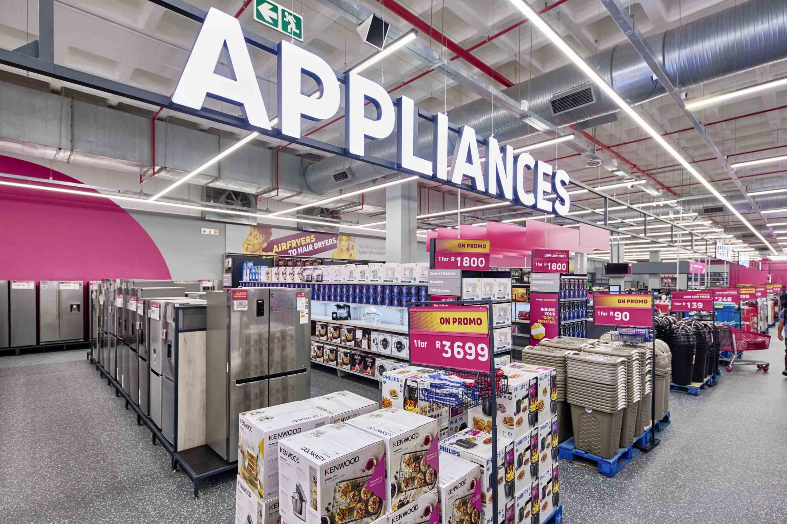
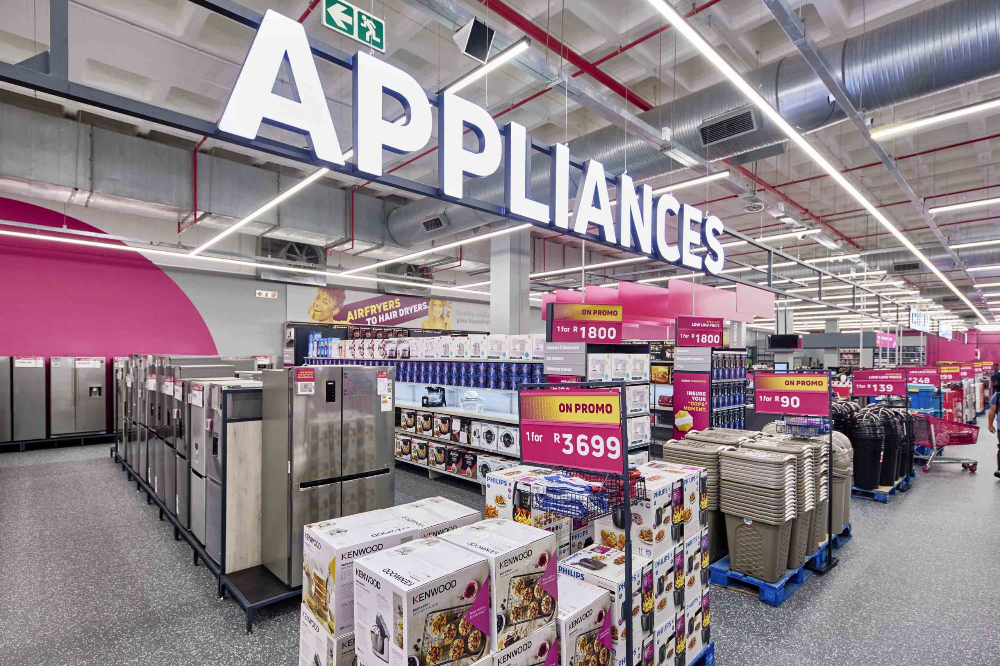
 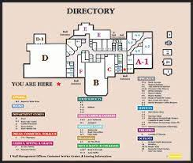
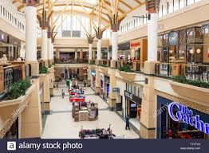
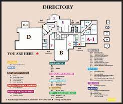
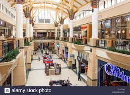

 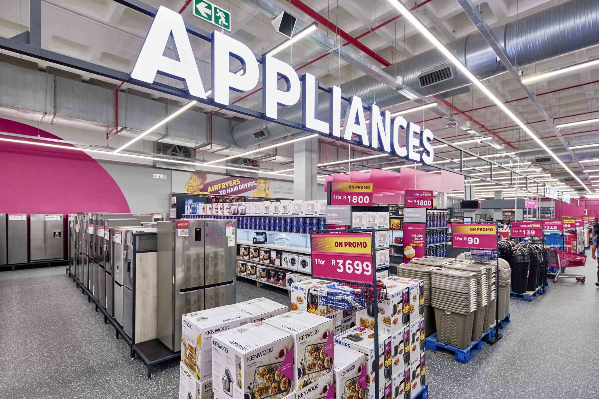
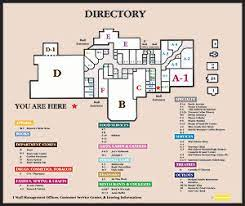
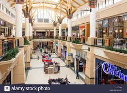
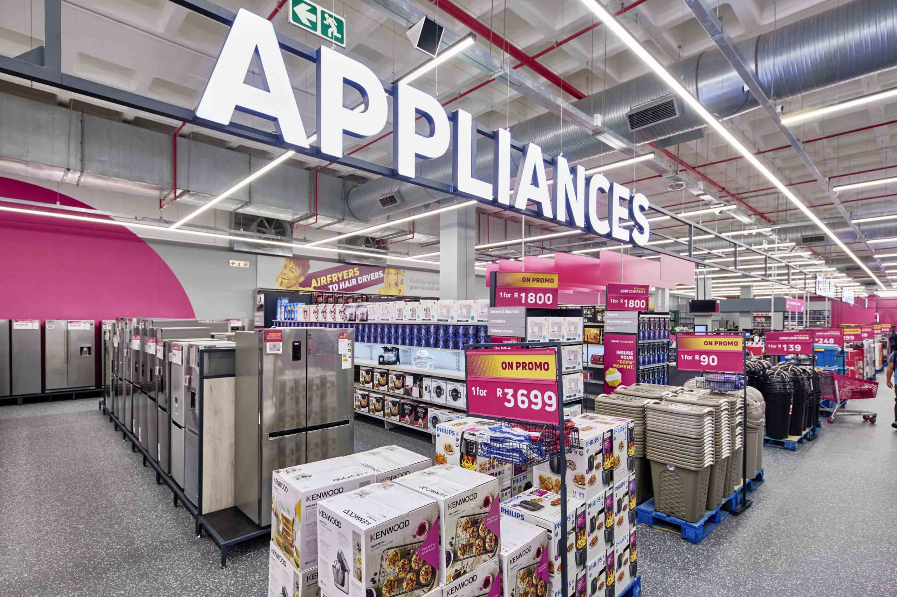
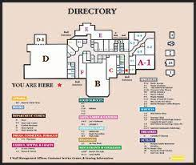
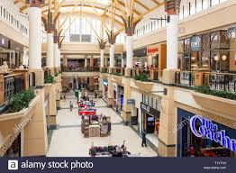
Gateway Theatre of Shopping or Gateway is a shopping centre located on Umhlanga Ridge in Umhlanga, north of Durban, KwaZulu-Natal, South Africa. Gateway Theatre of Shopping is one of the top 100 largest malls in the world. The shopping centre is currently under its 5th and largest expansion in 16 years ,Gateway sees more than two million visitors coming through its doors per month.[4] The centre was modeled on the Mall of America and West Edmonton Mall centres and was developed by Old Mutual Properties.[5] The construction and opening of Gateway Theatre of Shopping has also been the driving force for many new developments in the area. Originally a sugar cane plantation, the establishment of Gateway on the site has led to the development of a new town centre and both commercial and residential developments within the region. There is also a hotel attached to the mall called the Gateway Hotel operated by the Three Cities Group
trading hours
Mon-friday :07h00am-19h00pm